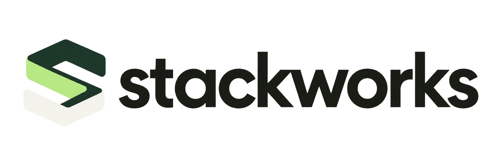

01
SW
LEARNAPPLYPRACTICAL EXPERIENCE
Internships
Build skills through structured, hands-on work in science and technology. Explore an area of interest and develop experience you can discuss and demonstrate.

SCIENCE · TECHNOLOGY · PRACTICAL LEARNING
Practical internships and mentored engineering and CSE projects to help you turn what you learn into work you can explain and present.
Build practical experience.
Turn your learning into real work.
01 idea → prototype
02 learn + build
03 your work ↗
StackWorks helps students connect academic learning with practical work in science, technology, engineering, and computer science. Explore an internship or get mentoring for your final-year project, with clear goals and a result you understand and can present.
02 / PROGRAMS
Get practical experience through an internship or move your academic project from idea to implementation.
PRACTICAL EXPERIENCE
Build skills through structured, hands-on work in science and technology. Explore an area of interest and develop experience you can discuss and demonstrate.
ENGINEERING & CSE
Get mentoring as you define, design, implement, and present a project aligned with your course requirements. You build and understand your own work at every stage.
PROJECT AREAS
Discuss your idea, course requirements, and available mentoring with us.
Project areas and mentoring availability depend on your course requirements and the scope of your idea. Contact us to discuss a suitable fit.
03 / START WITH A QUESTION
Use these as starting points for a conversation. Your final scope should fit your course, available resources, and supervisor’s requirements.
Design a simple way to submit, assign, and track campus support requests.
01 ↗Explore URL features and build a small educational tool that flags suspicious patterns.
02 ↗Use soil moisture readings to demonstrate a basic, responsive irrigation controller.
03 ↗Collect sample power readings and present usage trends in a clear dashboard.
04 ↗Illustrative concepts only. Final topics, components, and project scope are agreed with the student and aligned to academic requirements.
A CLEAR WAY FORWARD
We’ll help you identify a practical next step based on your interests and study goals.
Tell us what you’re studying, the topics you care about, and what you hope to learn.
We’ll discuss program options, expectations, and a suitable project direction.
Work through the next steps and develop an outcome you can present.
05 / A PRACTICAL PROCESS
The exact work depends on your project, but a strong process makes each stage easier to explain and review.
Clarify the need, objectives, boundaries, and success criteria.
Choose suitable tools, components, methods, and a realistic timeline.
Develop the prototype or application, then check it against the goals.
Prepare a clear demonstration and explain decisions, results, and limits.
06 / COMMON QUESTIONS
Have a question about your course or idea? Email us and we’ll discuss the details.
info@stackworks.in ↗Yes, we welcome enquiries about engineering and computer science projects. Share your branch, topic, and course requirements so we can discuss scope and mentoring availability.
No. StackWorks provides guidance so you can develop, understand, and present your own work. You remain responsible for your design, implementation, report, and compliance with your institution’s rules.
Yes. Send a short description of the problem you want to explore, your timeline, and any required tools or constraints. We can discuss whether the scope is a suitable fit.
Include your course and branch, year of study, area of interest, project deadline, and whether you’re asking about an internship or project mentoring.
Availability depends on the topic, project scope, timeline, and resources. We’ll confirm what can be supported after discussing your requirements.
ENQUIRIES
Email us with your course, area of interest, and whether you’re exploring an internship or a final-year project.
info@stackworks.in ↗